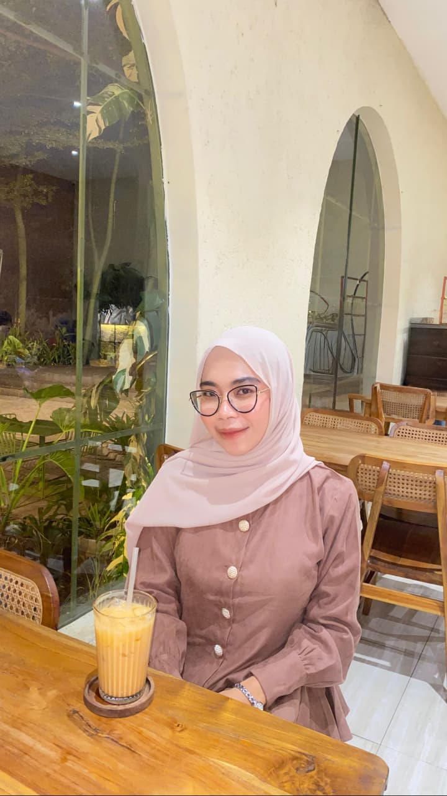

Sarjana Manajemen — Administrasi & Operasional Profesional
Saya adalah lulusan Sarjana Manajemen dari Universitas Terbuka yang memiliki kemampuan dalam pengelolaan administrasi dan analisis data. Terbiasa menggunakan Microsoft Excel untuk pengolahan data dan penyusunan laporan secara sistematis. Teliti, terstruktur, serta mampu bekerja secara mandiri maupun dalam tim.
PT. Indosurrati Sukses Makmur
Berperan sebagai Staff Admin di PT Indosurrati Sukses Makmur dengan fokus pada pengelolaan data dan efisiensi operasional.
Winiest Store
Admin e-commerce yang berorientasi pada hasil, berpengalaman dalam mengelola operasional toko online di berbagai platform marketplace.
Terbiasa menggunakan Microsoft Excel untuk pengolahan data dan penyusunan laporan secara sistematis.
Pengelolaan stok barang secara menyeluruh, akurat, dan terstruktur demi kelancaran operasional.
Kemampuan mendalam dalam pengelolaan administrasi kantor dan koordinasi lintas departemen.
Pengalaman operasional toko online di berbagai platform marketplace dengan penguasaan dashboard yang handal.
Universitas Terbuka
Pendidikan Menengah Atas
Pendidikan Menengah Pertama
Pendidikan Dasar
Terbuka untuk peluang kolaborasi, posisi administrasi, atau kesempatan profesional lainnya.